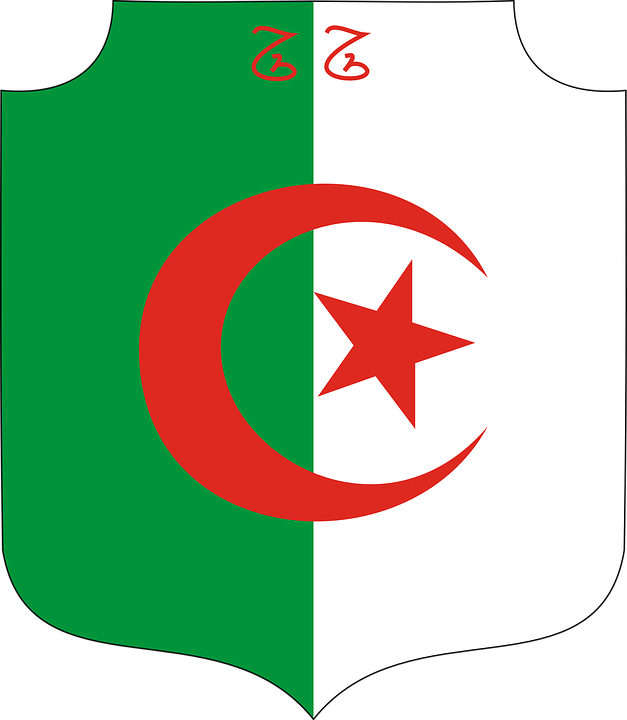

L’Algérie, un pays dont on entend beaucoup parler mais le connaissons-nous réellement ?
Il s’agit d’un territoire nord-africain bordant la mer Méditerranée au nord et doté d’un intérieur désertique au centre et au sud, le Sahara.
Ce territoire a été le théâtre de conquêtes de plusieurs civilisations au cours de l’histoire : les Berbères présents depuis l’Antiquité, les romains, les vandales, les byzantins, les arabes, les ottomans, la colonisation française …
Aujourd’hui, l’Algérie est remplie d’Histoire puisque par exemple, nous pouvons observer encore aujourd’hui les ruines romaines de Timgadau.
A 300 km au sud-ouest d’Alger, nous pouvons découvrir les pyramides à Frenda.
Au sein de la capitale Alger, nous pouvons apercevoir la mosquée Ketchaoua, datant de 1612 environ et donc de l’empire Ottoman.
Élevée au cœur d’Alger, la Basilique Notre-Dame d’Afrique nous rappelle la colonisation française, en arborant son architecture néo-byzantine.